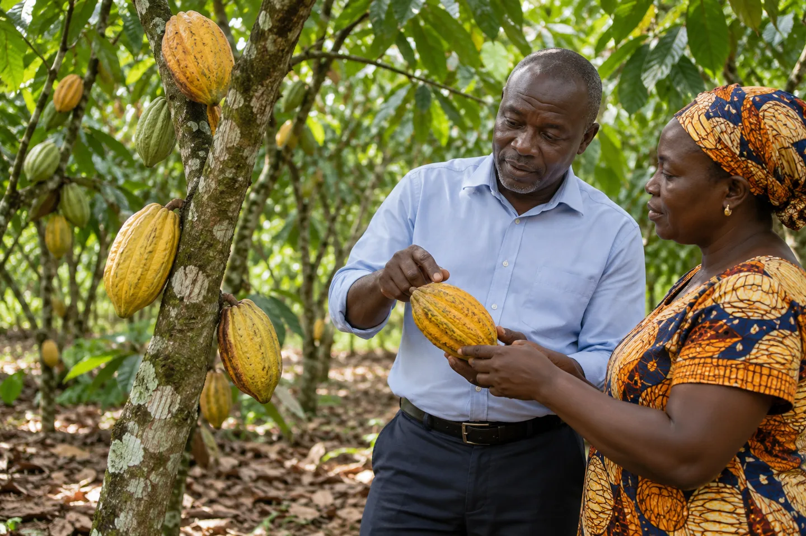

La prochaine génération du numérique agricole.
2 à 3 mois pour se former à la data, à l’IA et aux statistiques. Puis une certification et un accompagnement vers l’emploi.
Calendrier à venirEn savoir plus ↗
ANCRÉS EN AFRIQUE DE L’OUEST
Nous accompagnons les filières agricoles dans leur transformation digitale et verte, en reliant données, talents et innovation.

Un regard local.
Des perspectives nouvelles.
NOTRE CONVICTION
Conseil, données et services numériques pour les filières agricoles ouest-africaines.
Des coopératives aux institutions. Une ambition : la résilience.
NOS EXPERTISES
Des compétences complémentaires pour accompagner vos projets, de la stratégie au terrain.
LES TALENTS AU CŒUR DU CHANGEMENT
2 à 3 mois pour se former à la data, à l’IA et aux statistiques. Puis une certification et un accompagnement vers l’emploi.

Une formation destinée à 20 agripreneures ivoiriennes, avec la Fondation AWI. Conception, animation et suivi : AgroPulse.
DE L’ÉCOUTE À L’ACTION
Écouter vos enjeux, vos équipes et les réalités de votre filière.
Concevoir une réponse adaptée, en associant expertise métier et numérique.
Accompagner vos équipes pour qu’elles s’approprient les outils et les méthodes.
ET SI NOUS CULTIVIONS VOTRE PROJET ?
Présentez votre projet, votre filière et les défis que vous souhaitez relever.
Cette première version permet de préparer votre demande. Aucun message n’est envoyé : les coordonnées de contact seront ajoutées après validation.